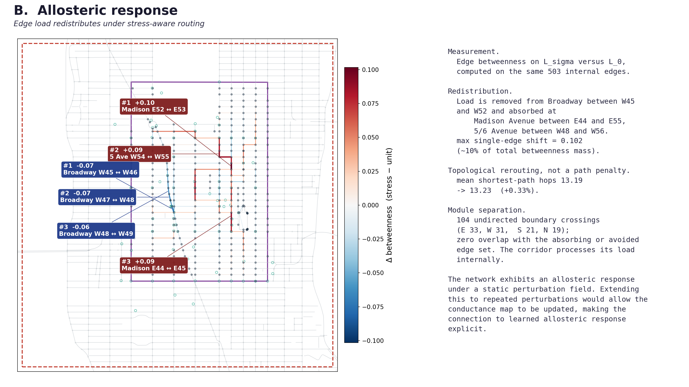

aimezaimez
aimezaimezI put this page together to show the part of the project that seems most likely to intersect with the emergent-intelligence direction you have been cultivating through the NRT. The mobility substrate now gives that question a concrete surface, and I would value your read on whether the alignment I think I see here is real and worth developing further.
The page has four parts. It begins with the routing substrate and the two figures that make its current behavior visible. It then turns to the collective-behavior bridge that this behavior opened for me, before ending with the specific question I would most value your read on. The two links at the bottom point outward to a shorter background report and the full figure-by-figure walkthrough.
The routing substrate is now more than a worked example. It is the first demonstrated applied instance of the broader problem the program studies: how artifacts remain usable through time and across contexts when systems operate on scene-level or field-level structure that local outputs do not capture. The question I am bringing to you is whether the relation I am drawing between this substrate, emergent collective behavior, and the larger physical-systems framing is a productive one, and what language would carry that relation most accurately.


The route comparison and the redistribution figure matter for the same structural reason swarm behavior matters. The key event is a bounded change in the field reorganizing response across the whole connected system. The parallel I am drawing is specific: in both cases, the central question is what kind of frame lets a connected system produce coherent large-scale response.
The short video segment below is useful because it moves from rule-based flocking models to navigation models built from how animals encode space, and then out again to human crowds and active matter. I am not using it as evidence in itself. I am using it because it makes the cross-domain structure of the question legible in one place.
The 2025 flocking paper that the video points toward is linked here as a related anchor: Allocentric Flocking. The structural parallel I am trying to understand is that, in both cases, coherent large-scale behavior depends on how a connected system moves between local, agent-centered information and a world-anchored frame that organizes non-local response.
There are really two questions I care about here. First, does the corridor-wide redistribution look to you like a meaningful non-local response to a bounded perturbation, or am I overreading it. Second, if the connection is real, what is the right physical or dynamical language to carry it without collapsing the differences between the routing substrate and the systems you actually study.
The shorter report is the compact background surface for the substrate itself: what it is, how it was built, and what the route-comparison result establishes. The canonical walkthrough is the larger figure-by-figure surface: every canonical figure with its claims, boundaries, caveats, things to improve, and the specific questions I have accumulated about it. The related-anchors page is the side path if you want the explicit bridge to the recent papers and the active-matter lineage; I have kept those bridges implicit in the main packet itself.